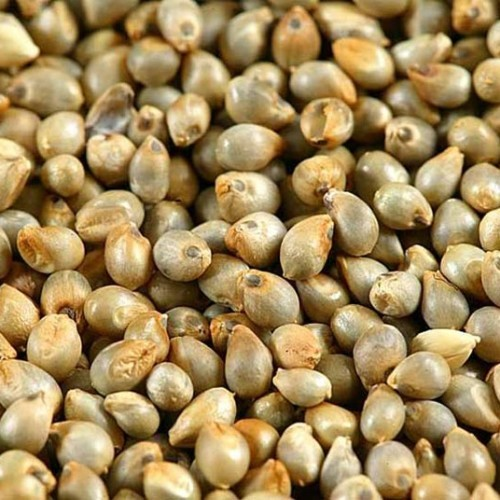
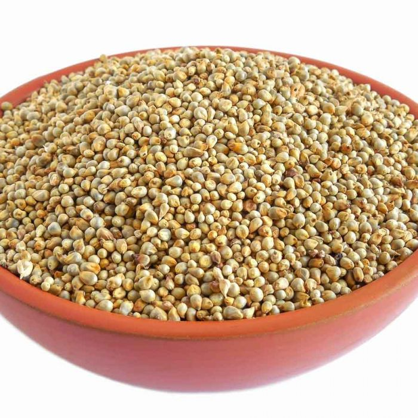
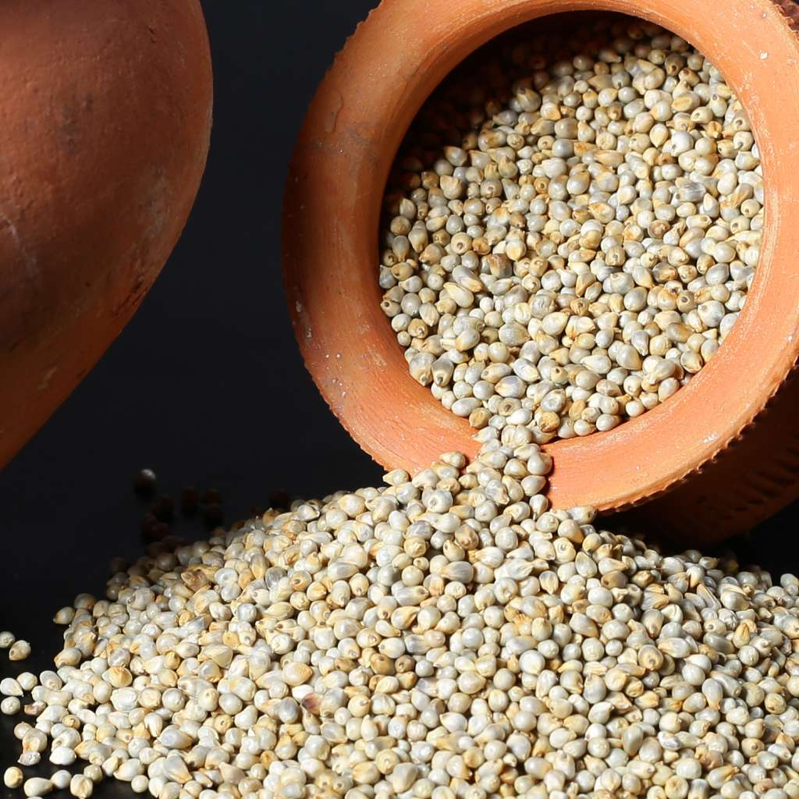

PEARL MILLET
Introduction

Pearl millet is well adapted to growing areas characterized by drought, low soil fertility, low moisture, and high temperature. It performs well in soils with high salinity or low pH. Because of its tolerance to difficult growing conditions, it can be grown in areas where other cereal crops, such as maize or wheat, would not survive. Pearl millet is a summer annual crop well-suited for double cropping and rotations. The grain and forage are valuable as food and feed resources in Africa, Russia, India and China.
Today, pearl millet is grown on over 260,000 square kilometres (100,000 sq mi) of land worldwide. It accounts for about 50% of the total world production of millets.
World production of millets has been stable during the 1980s. According to FAO, 39.4 million hectares (97 million acres) of millet were planted in 1987 with an average production of only 704 kilograms per hectare (628 lb/acre).
Nutritions
Pearl millet, scientifically known as Pennisetum glaucum, is a nutritious cereal grain that offers several health benefits. Here are the key nutritional aspects of pearl millet:
- Carbohydrates: Pearl millet is primarily composed of carbohydrates, making it a good source of energy. It contains complex carbohydrates that are digested slowly, providing sustained energy release.
- Protein: Pearl millet is relatively high in protein compared to other cereal grains, with an average protein content of around 10-12%. This makes it a valuable protein source, especially in regions where animal protein is scarce.
- Dietary Fiber: It is rich in dietary fiber, including both soluble and insoluble fibers. Dietary fiber promotes digestive health, regulates bowel movements, and helps maintain healthy cholesterol levels.
- Vitamins:
-
- Vitamin B-complex: Pearl millet contains various B vitamins such as thiamine (B1), riboflavin (B2), niacin (B3), folate (B9), and vitamin B6. These vitamins are essential for energy metabolism, nerve function, and red blood cell production.
- Vitamin E: It contains vitamin E, an antioxidant that helps protect cells from oxidative damage.
- Minerals:
- Iron: Pearl millet is a good source of iron, which is important for red blood cell production and preventing iron deficiency anemia.
Magnesium: It is rich in magnesium, an essential mineral for muscle function, nerve function, and bone health.
- Phosphorus: Pearl millet contains phosphorus, which plays a role in bone health, energy metabolism, and DNA synthesis.
- Potassium: It provides potassium, an electrolyte that helps regulate blood pressure and fluid balance in the body.
- Antioxidants:
- Pearl millet contains antioxidants such as phenolic compounds and flavonoids, which help neutralize free radicals and reduce the risk of chronic diseases.
- Gluten-Free:
- Pearl millet is naturally gluten-free, making it suitable for individuals with gluten intolerance or celiac disease.
Incorporating pearl millet into the diet can contribute to overall nutritional intake, especially in terms of protein, fiber, vitamins, and minerals. It is commonly consumed as porridge, flatbread, or in various dishes in regions where it is grown.
How to grow Pearl millet

Growing pearl millet, also known as bajra, involves several steps to ensure successful cultivation. Here's a guide on how to grow pearl millet:
- Selecting the Right Site:
- Choose a site with well-drained soil and good sunlight exposure. Pearl millet can tolerate various soil types but prefers sandy loam or loamy soils.
- Ensure that the site has adequate air circulation to prevent moisture-related diseases.
- Preparing the Soil:
- Prepare the soil by plowing or tilling to a depth of about 15-20 centimeters. Remove weeds and debris from the planting area.
- Incorporate organic matter such as compost or well-rotted manure into the soil to improve fertility and moisture retention.
Seed Selection and Sowing:
- Select high-quality pearl millet seeds from a reputable source. The seeds should be clean, healthy, and free from disease.
- Sow the seeds directly into the prepared soil at a depth of about 2-3 centimeters. Space the seeds evenly in rows with sufficient distance between rows for proper plant growth.
- Watering:
- Water the planted seeds immediately after sowing to ensure good soil moisture for germination.
- Provide regular watering, especially during dry periods. Pearl millet is drought-tolerant but benefits from consistent moisture during critical growth stages.
- Fertilization:
- Conduct a soil test before planting to determine nutrient levels and pH. Based on the soil test results, apply balanced fertilizers with nitrogen, phosphorus, and potassium (N-P-K) as needed.
- Incorporate fertilizers into the soil during land preparation or apply them as side dressing during the growing season, depending on the fertilizer type and crop stage.
- Weed Control**:
- Keep the planting area free from weeds by regular cultivation, mulching, or using herbicides. Weeds compete with pearl millet for nutrients, water, and sunlight, so timely weed control is essential.
- Pest and Disease Management:
- Monitor the crop for pests such as aphids, armyworms, and grasshoppers. Use appropriate pest control methods if pest populations exceed tolerable levels.
- Watch for signs of diseases such as downy mildew and leaf blight. Use disease-resistant varieties and practice crop rotation to minimize disease pressure.
- Support and Pruning:
- Pearl millet may benefit from support structures in windy areas or during heavy rainfall to prevent lodging (bending or breaking of stems).
- Prune any damaged or diseased plant parts to promote healthy growth and reduce the risk of spread.
- Harvesting:
- Pearl millet typically matures in about 60-90 days after sowing, depending on the variety and growing conditions.
- Harvest the mature grains when the panicles turn golden brown and dry. Cut the panicles from the plants and thresh to separate the grains from the straw.
By following these steps and providing proper care, you can successfully grow pearl millet and obtain a healthy harvest of nutritious grains.
Fertilizing

Fertilizing pearl millet involves providing the necessary nutrients to support healthy growth and maximize yield. Here are some guidelines for fertilizing pearl millet:
- Soil Testing**: Before fertilizing, conduct a soil test to assess nutrient levels, pH, and soil fertility. Soil testing helps determine the specific fertilizer requirements for pearl millet and allows for targeted nutrient applications.
- Nitrogen (N):
- Pearl millet has a high nitrogen requirement for optimal growth and grain production.
- Apply nitrogen fertilizer based on soil test results and crop demand. The recommended nitrogen application rate varies depending on soil nitrogen levels, expected yield, and environmental conditions.
- Consider split applications of nitrogen to improve nutrient efficiency and reduce losses. Apply a portion of nitrogen at planting or early growth stages, and additional doses during the vegetative and reproductive phases.
- Phosphorus (P):
- Phosphorus is essential for root development, flowering, and seed formation in pearl millet.
- Apply phosphorus fertilizer based on soil test recommendations. Phosphorus is typically applied before planting or incorporated into the soil during seedbed preparation.
- Consider using phosphorus fertilizers with slow-release formulations to promote efficient nutrient uptake by pearl millet plants.
- Potassium (K):
- Potassium is important for overall plant health, stress tolerance, and grain filling in pearl millet.
- Apply potassium fertilizer based on soil test results and crop requirements. Potassium deficiencies can lead to reduced yields and poor grain quality.
- Consider using potassium sources such as potassium chloride, potassium sulfate, or potassium nitrate to meet the crop's potassium needs.
- Micronutrients:
- Monitor soil micronutrient levels and address deficiencies through targeted micronutrient applications.
- Common micronutrients for pearl millet include zinc, manganese, boron, and iron. Use micronutrient fertilizers or foliar sprays to supplement micronutrient requirements during critical growth stages.
- Organic Matter:
- Incorporate organic matter such as compost, well-rotted manure, or green manure into the soil to improve nutrient availability and soil structure.
- Organic matter enhances soil fertility, water retention, and microbial activity, promoting healthy pearl millet growth.
- Fertilizer Application:
- Apply fertilizers evenly and incorporate them into the soil during land preparation or seeding.
- Consider using band placement or side dressing techniques for nitrogen and potassium fertilizers to improve nutrient uptake by pearl millet roots.
- Monitor and Adjust:
- Monitor pearl millet growth, leaf color, and nutrient status throughout the growing season. Adjust fertilizer applications based on crop response, weather conditions, and soil nutrient levels to optimize nutrient management and minimize environmental impact.
By following these fertilization guidelines and practices, you can support healthy pearl millet growth, improve nutrient utilization, and achieve higher yields in your crop.